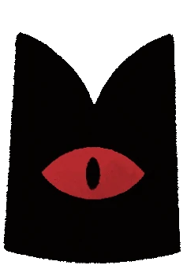
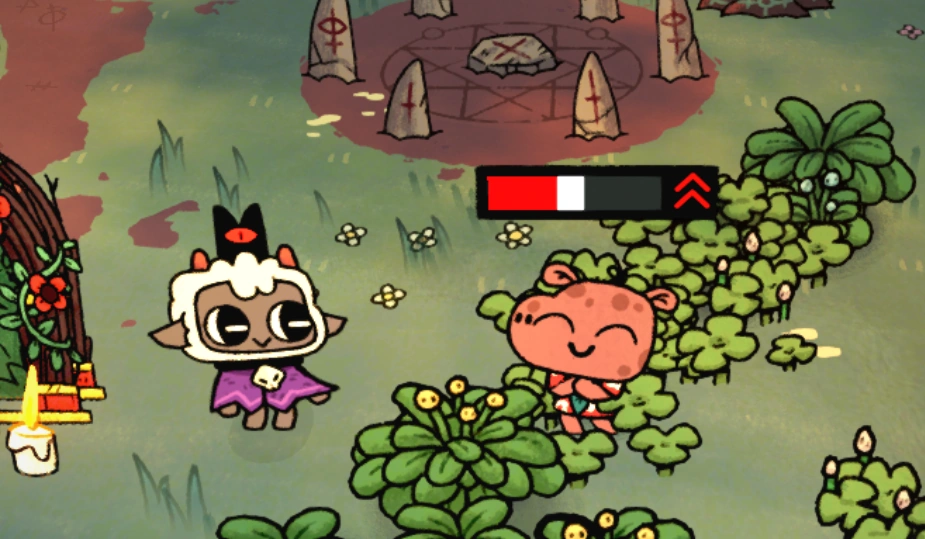
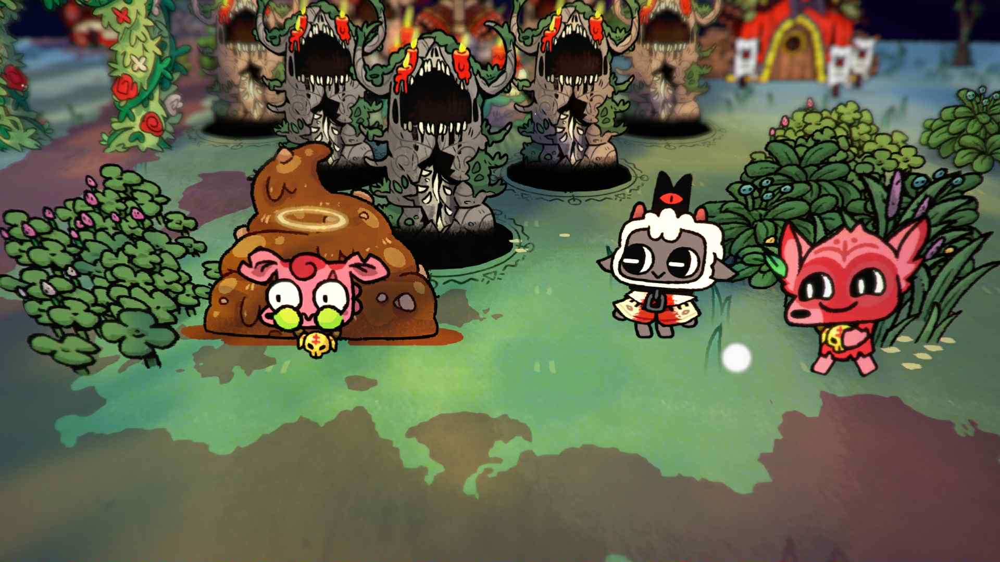

THE LAMB


The game's main protagonist. They are a possessed lamb saved from annihilation by an ominous stranger, to whom they must repay their debt by building a loyal following in his name.
The Red Crown
A crown of great power bestowed upon the Lamb by The One Who Waits.
Through the power of the Red Crown, the Lamb became immortal, returning from death if ever killed. It can transform into weapons for killing enemies or simply tools for maintaining the cult.
The Goat

The Lamb's mirror image and Bearer of the Purple Crown. The Goat can be played either by a second player or in singleplayer as an alternative fleece (cosmetic).
The One Who Waits
SET ME FREE
Formerly one of the Bishops of the Old Faith. Betrayed and sealed away by his siblings, he saves the Lamb from being sacrificed and grants them the power of the Red Crown to start a cult and defeat the Bishops.
SET ME FREELeshy

Leshy is one of the four Bishops of the Old Faith, the ruler of Darkwood, and Bearer of the Green Crown. He is the youngest of the four bishops and the first major boss.
DID YOU KNOW?
The bandages over Leshy's eyes reference the phrase "See No Evil". This is also the name of his defeat achievement.
Heket

Heket is one of the four Bishops of the Old Faith, the ruler of Anura, and Bearer of the Yellow Crown. She is the second youngest of the four bishops and the second major boss.
DID YOU KNOW?
Heket's slit throat represents the phrase "Speak No Evil". It is also the name of the achievement for defeating her.
Kallamar

Kallamar is one of the four Bishops of the Old Faith, the ruler of Anchordeep, Bearer of the Blue Crown, and the third major boss of the game. He is also the second eldest bishop and known for his cowardly attitude (As mentioned by various characters, and partially himself).
DID YOU KNOW?
Kallamar's severed ears reference the phrase "Hear No Evil". This is also the name of the achievement earned for defeating him.
Shamura

Shamura is one of the four Bishops of the Old Faith. They rule the Silk Cradle biome and are the fourth major boss in Cult of the Lamb. They are the oldest (and thought to be the wisest) of their siblings. Some dialogue hints that they were closest to The One Who Waits.
DID YOU KNOW?
Shamura's bandaged head refers to the phrase "Think No Evil". It is also the name of the achievement received for defeating them.
Followers
Followers are the backbone of your cult, responsible for the generation of devotion and the gathering of resources. Perhaps the most important thing about Followers is that they are also in of themselves a resource, and some rituals and abilities explicitly call for using them. Without a Cult, survival is impossible. A shepherd cannot survive without its flock.
Maintenance
Your cult has various needs that must be tended to. Make sure to keep them happy or else they will leave or die.
Loyalty
The individual Follower's level, which cannot decrease. The higher the Loyalty, the more Devotion and better performance the Follower can give.
Hunger

Followers require being fed every so often, otherwise they will starve, lower the Cult's Faith and will eventually die. Cook them meals to keep them fed and happy.
Hygiene
If the Cult is too dirty (from poop, vomit, or corpses), Followers will get sick. Sick Followers cannot work, make the Cult dirtier (by regularly vomiting and pooping), and will eventually die if not treated.
Faith
Faith is the Cult's "happiness meter" which is affected by your actions as a leader, and whether or not your Followers are well cared for. When Faith becomes too low, Followers may start to question your ways and dissent.
Weapons
Weapons are one of the many ways the Red Crown can transform to help the Lamb.

Sword
A balance of damage, speed, and range.
Axe
Slow with a large range and high damage.
Dagger
Fast with low damage and short range.
Gauntlet
Deal increased damage as the combo continues.
Hammer
Immense damage but leaves you vulnerable for a long time.
Blunderbuss
Deals higher damage up close but takes time to fully reload when all shells are used up.
Curses
Curses are spells that the Lamb can cast if they have enough Fervour. Only one can be equipped at a time.
Fireballs
Flaming Shot
Cleansing Fire
Hounds of Fate
Strike of the Crown
Blasts
Divine Blast
Divine Guardian
Divine Blizzard
Divine Blight
Slashes
Death's Sweep
Oath of the Crown
Death's Attendant
Death's Squall
Tentacles
Touch of Turua
Maelstrom
Touch of Ithaqua
Touch of the Revenant
Splatters
Ichor Thrown
Point of Corruption
Path of the Righteous
Call of the Crown
NPCs
As you crusade through the Lands of the Old Faith, you will encounter many interesting creatures who may aid you.
Clauneck

The Tarot Card dealer. Allows the Lamb to draw one from two random cards once for each encounter. His room may appear randomly in a combat area or as its own area during a crusade.
Kudaai

The weaponsmith. Offers three curses and weapons to the Lamb to replace one they currently have equipped. His forge may appear randomly in a combat area or as its own area during a crusade.
Chemach

The Relic merchant. Provides the Lamb with one random Relic. Her room may appear randomly in a combat area or as its own area during a crusade.
...and many more!